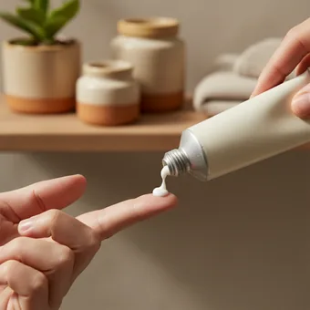
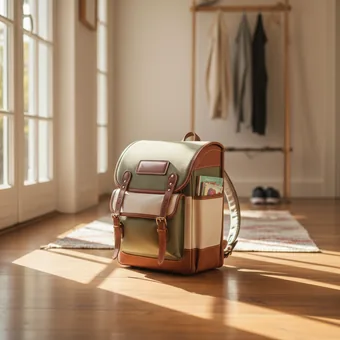
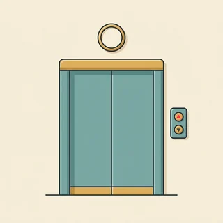
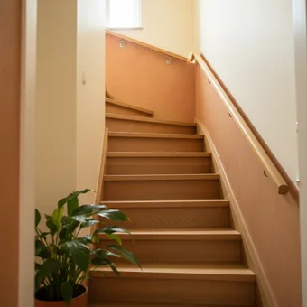

deutschoderwas · Sprechclub · Woche 9 · Strang D · Teil 1 · Dienstag, 10. November
Wenn dir das Wort fehlt: umschreiben statt steckenbleiben
Es passiert jedem, jeden Tag: Du weißt genau, was du meinst — und das Wort ist einfach weg. Muttersprachler kennen dieses Gefühl übrigens auch. Der Unterschied ist nur, dass sie nicht aufhören zu sprechen. Sie sagen: dieses Ding, mit dem man … Und der andere sagt: Ach, du meinst den Korkenzieher. Genau das üben wir heute — und ganz nebenbei lernst du dabei die Sätze, mit denen Deutsche Dinge beschreiben, die sie nicht benennen können.
Dein Niveau
Gleiches Thema, andere Sätze. Wechsle jederzeit — probier ruhig beide Seiten aus.
Das Wort ist weg — und jetzt?
Die meisten Lernenden machen an dieser Stelle dasselbe: Sie halten an, greifen zum Handy, übersetzen. Das kostet zehn Sekunden, und in diesen zehn Sekunden ist das Gespräch woanders. Die Alternative kostet zwei Sekunden und klingt so: „Wie heißt das noch — dieses Ding, mit dem man Flaschen aufmacht?“ Der andere hilft dir sofort. Und nebenbei hat er gehört, dass du wunderbar Deutsch sprichst.
Was machst du, wenn dir mitten im Satz ein Wort fehlt?
Hast du schon einmal etwas mit den Händen erklärt?
Welches deutsche Wort vergisst du immer wieder?
Warum fühlt sich eine Lücke im Wortschatz peinlicher an, als sie ist?
Was verrät es über jemanden, wenn er einfach weiterspricht?
Gibt es Situationen, in denen Umschreiben besser ist als das genaue Wort?
🔑 Die drei Anfänge, die immer funktionieren:„so ein Ding, mit dem man …“ · „der Ort, wo man …“ · „das ist so etwas Ähnliches wie …“. Mehr brauchst du nicht. Alles Weitere ist heute nur Übung.
Und die Grammatik dahinter ist eine einzige
Alle drei Anfänge sind derselbe Satz: ein Nomen und danach ein Relativsatz. Neu ist heute nur, was zwischen die beiden kommt. Bei einem Ding steht eine Präposition davor: das Ding, mit dem man … Bei einem Ort genügt wo: der Raum, wo man … Und wenn es kein Nomen gibt, hilft ein einziges Wort: etwas, womit man …
Kannst du erklären, was ein Briefkasten ist — ohne das Wort zu benutzen?
Was ist ein Keller? Sag es in einem Satz.
Beschreib einen Gegenstand in deiner Tasche.
Wie erklärst du ein Wort, für das es in deiner Sprache kein deutsches Gegenstück gibt?
Was ist schwerer zu beschreiben: ein Ding oder ein Gefühl?
Wann hat dich jemand missverstanden, obwohl du alles richtig gesagt hast?
💡 Der Trick mit den zwei Fragen: Frag dich zuerst Was ist es ungefähr? (ein Ding, ein Raum, eine Person, ein Papier) und dann Was macht man damit? Aus diesen zwei Antworten wird jede Umschreibung — automatisch.
Zwölf Dinge, die du gleich umschreibst
Sag jedes Wort laut. Und dann — noch wichtiger — sag den Satz aus dem Tipp: die Umschreibung, mit der du dasselbe Ding erklärst, wenn dir das Wort gerade fehlt.
der Briefkasten
„Der Brief liegt seit gestern im Briefkasten.“
💡 Falls dir das Wort fehlt: „so ein Kasten an der Hauswand, in den die Post geworfen wird“. Achte auf den Fall: in den Kasten (wohin, Akkusativ), aber in dem Kasten (wo, Dativ).
die Umkleidekabine
„Die Umkleidekabine ist gleich hinten links.“
💡 Die Umschreibung geht mit wo: „der kleine Raum, wo man die Sachen anprobiert“. Bei Orten ist wo immer die einfachste Lösung — und immer richtig.
der Kassenbon
„Ohne Kassenbon kann ich das leider nicht umtauschen.“
💡 Umschreibung: „der Zettel, den man an der Kasse bekommt und mit dem man umtauschen kann“. Andere Wörter dafür: der Kassenzettel, die Quittung, der Beleg.

die Salbe
„Die Salbe hilft gegen die Schmerzen im Rücken.“
💡 Umschreibung: „so eine Creme in einer Tube, mit der man etwas einreibt“. Man trägt sie auf oder reibt sie ein — beides klingt besser als tun.

der Ranzen
„Der Ranzen ist schwerer als das Kind.“
💡 Umschreibung: „so eine feste Tasche, die Kinder auf dem Rücken tragen“. Für Erwachsene heißt dasselbe der Rucksack — Ranzen sagt man nur bei Schulkindern.
die Mülltonne
„Die gelbe Mülltonne wird nur alle zwei Wochen geleert.“
💡 Umschreibung: „der große Behälter, in den man den Müll wirft“. Und ein Wort, das du nur in Deutschland brauchst: die Mülltrennung — gelb, blau, braun und schwarz, jede Tonne für etwas anderes.

der Aufzug
„Der Aufzug ist seit Montag kaputt.“
💡 Umschreibung: „das Ding, mit dem man in den vierten Stock fährt, ohne zu laufen“. Zweites Wort dafür: der Fahrstuhl — beide sind völlig üblich.
die Ampel
„An der zweiten Ampel biegst du rechts ab.“
💡 Umschreibung: „das Ding an der Kreuzung, das rot, gelb und grün wird“. Und Vorsicht bei einem sehr deutschen Detail: Bei Rot geht hier wirklich niemand über die Straße, besonders nicht, wenn Kinder danebenstehen.
der Ärmel
„Der linke Ärmel ist deutlich länger als der rechte.“
💡 Umschreibung: „der Teil vom Hemd, in dem der Arm steckt“. Und eine Redewendung, die du sofort brauchen kannst: etwas aus dem Ärmel schütteln — es ohne Mühe können.
der Keller
„Die Winterreifen liegen unten im Keller.“
💡 Umschreibung: „der Raum unter dem Haus, wo man Sachen abstellt“. In deutschen Mietshäusern gehört meistens ein Kellerabteil zur Wohnung — mit eigenem Schloss.
der Schrank
„Im Schrank ist wirklich kein Platz mehr.“
💡 Umschreibung: „das große Möbel mit Türen, in dem die Kleidung hängt“. Und pass auf: der Schrank hat Türen, das Regal hat keine. Deutsche Wohnungen kommen übrigens fast immer ohne Schrank.

das Treppenhaus
„Im Treppenhaus hängt ein Aushang von der Hausverwaltung.“
💡 Umschreibung: „der Teil vom Haus, wo die Treppe ist und über den alle nach oben gehen“. Wichtig: Im Treppenhaus darf nichts stehen — das ist der Fluchtweg, und darauf achten Vermieter sehr genau.
💡 Spiel „Rate das Ding“: Einer wählt heimlich eine Karte und beschreibt sie, ohne das Wort zu sagen — mit „so ein Ding, mit dem …“ oder „der Raum, wo …“. Der andere rät. Wer das Wort versehentlich sagt, hat verloren.
Ding, Ort oder gar kein Nomen?
Es gibt drei Umschreibungen, und welche du brauchst, hängt nur davon ab, worüber du sprichst. Zwei Sekunden Nachdenken genügen — danach baut sich der Satz von allein.
🔧
Es ist ein Ding
Präposition + Relativpronomen
so ein Ding, mit dem man Flaschen aufmacht
🏠
Es ist ein Ort
einfach wo
der Raum, wo man die Sachen anprobiert
❔
Du hast gar kein Nomen
etwas + wo(r)-
etwas, womit man schneidet
✅ So ist es richtig
Das ist so ein Ding, mit dem man Flaschen aufmacht.
Warum das stimmtDas Verb aufmachen braucht hier ein Werkzeug, also mit. Die Präposition steht vor dem Relativpronomen, und danach richtet sich der Fall: mit verlangt den Dativ, also dem.
❌ So klingt es falsch
Das ist so ein Ding, das man Flaschen mit aufmacht.
Das ProblemIm Englischen wandert die Präposition ans Ende, im Deutschen nie. Sie steht immer direkt vor dem Relativpronomen — mit dem, in dem, auf dem, für den.
✅ So ist es richtig
Das ist der Raum, wo man die Kleidung anprobiert.
Warum das stimmtBei Orten darfst du immer wo nehmen — auch wenn in dem genauso richtig wäre. wo ist kürzer, klingt natürlicher und du musst über keinen Fall nachdenken.
❌ So klingt es falsch
Das ist der Raum, wo man die Kleidung anprobiert in.
Das ProblemWieder die Präposition am Ende. Und sie ist hier sogar überflüssig: wo enthält das in bereits. Entweder wo man anprobiert oder in dem man anprobiert — nie beides.
✅ So ist es richtig
Ich suche etwas, womit ich das Paket aufschneiden kann.
Warum das stimmtNach etwas, nichts, alles und das gibt es kein normales Relativpronomen. Dort steht was — und mit Präposition wird daraus ein wo(r)-Wort: womit, wofür, worauf, worüber.
❌ So klingt es falsch
Ich suche etwas, mit dem ich das Paket aufschneiden kann — oder: etwas, was ich mit aufschneiden kann.
Das ProblemDie erste Variante hört man zwar, korrekt ist nach etwas aber womit. Die zweite ist in beiden Teilen falsch. Merk dir die Reihe: etwas, was — und mit Präposition etwas, wo+Präposition.
Drei Fragen, in dieser Reihenfolge:
Ist es ein Ort? Dann wo: der Raum, wo …, die Stelle, wo … Das geht immer und ist nie falsch.
Ist es ein Ding, das man benutzt? Dann Präposition plus Relativpronomen: das Ding, mit dem man …
Fehlt dir sogar das Nomen? Dann etwas plus wo(r)-: etwas, womit man …, etwas, worauf man …
Und immer möglich: der Vergleich. Das ist so etwas Ähnliches wie ein Messer, nur kleiner.
Und wenn gar nichts geht, gibt es die Notbremse, die jeder Deutsche benutzt: „Wie heißt das noch mal — dieses Ding da?“ Zusammen mit einer Handbewegung funktioniert das in hundert Prozent der Fälle. Sprich weiter, hör nicht auf.
🎯 Zu zweit, zwei Minuten: Einer nennt ein alltägliches Wort, der andere beschreibt es in drei Sätzen, ohne es zu benutzen. Erst Was ist es ungefähr?, dann Was macht man damit?, dann Wo findet man es?
Vier Bausteine für die Beschreibung
Was es ist, wozu man es braucht, wo es steht, wie es aussieht. Diese vier Fragen beantworten jede Umschreibung — und in jeder steckt heute ein Relativsatz.
1 · 📦 Was ist es ungefähr? Das ist so ein Ding …Das ist eine Art Tasche.So etwas Ähnliches wie ein Messer.Es ist aus Plastik.
So klingt esDas ist so ein Ding aus Plastik, so etwas Ähnliches wie eine Tasche.
2 · 🔧 Wozu braucht man es? … mit dem man etwas aufmacht.Man braucht es, um zu putzen.Damit schneidet man Papier.Das benutzt man beim Kochen.
So klingt esDas ist ein Ding, mit dem man Flaschen aufmacht — man braucht es beim Kochen.
3 · 📍 Wo findet man es? Das ist der Raum, wo …Das hängt an der Wand.Es steht meistens draußen.Man findet es in jeder Küche.
So klingt esEs hängt an der Wand, meistens draußen neben der Haustür.
4 · 👀 Wie sieht es aus? Es ist ungefähr so groß.Es ist rund und aus Metall.Vorne ist ein Griff.Es hat drei Farben.
So klingt esEs ist ungefähr so groß wie eine Hand, rund und aus Metall.
1 · 📦 Kategorie und Abgrenzung Es gehört zu den Dingen, die …Es ist eine besondere Form von …Vergleichbar mit …, aber deutlich kleiner.Es erfüllt denselben Zweck wie …
So klingt esEs ist eine besondere Form von Tasche — vergleichbar mit einem Rucksack, nur fest und für Kinder.
2 · 🔧 Zweck genauer Es dient dazu, …Ohne das könnte man nicht …Es wird benutzt, um … zu …Man greift danach, wenn …
So klingt esEs dient dazu, etwas zu öffnen, das sich mit der Hand nicht öffnen lässt.
3 · 📍 Ort und Zusammenhang Man findet es überall dort, wo …Es gehört in jeden Haushalt.In Deutschland steht es in jedem Hof.Es ist an eine Situation gebunden.
So klingt esMan findet es überall dort, wo Menschen wohnen — in Deutschland steht es in jedem Hof.
4 · 👀 Eigenschaften bündeln Auffällig ist vor allem …Charakteristisch dafür ist …Es unterscheidet sich dadurch, dass …Man erkennt es sofort an …
So klingt esMan erkennt es sofort an den drei Farben — charakteristisch ist, dass sie nacheinander leuchten.
Verb die Frage was du damit beschreibst Höflichkeit
📣 Reihum: Jeder beschreibt einen Gegenstand aus dem Raum, in dem er gerade sitzt — vier Sätze, einer pro Baustein. Die anderen raten. Wer das Wort selbst sagt, ist als Nächster dran.
Vier Situationen — zwei Runden
Runde 1: Lest den Dialog zu zweit laut. Runde 2: Klappt die Zeilen zu und sprecht frei — nur die Stichwörter bleiben.
Dialog 1 · „In der Werkstatt“
A hört ein Geräusch am Auto und kennt kein einziges Fachwort. B versteht trotzdem — weil A einfach weiterspricht.
A
Da ist so ein Geräusch. Immer wenn ich bremse, macht es vorne links so ein Quietschen.
B
Verstehe. Und das Ding, mit dem gebremst wird — hatten Sie das schon mal wechseln lassen?
🗣️ das Ding, mit dem … — Präposition vor dem Relativpronomen, danach Dativ. B benutzt selbst eine Umschreibung, damit A folgen kann.tippen = Hilfe zeigen
A
Ich glaube nicht. Ich habe das Auto erst seit zwei Jahren, und da war nichts.
B
Dann sind wahrscheinlich die Bremsbeläge dran. Das sind die Teile, die sich beim Bremsen abnutzen.
🗣️ Und jetzt erklärt B das Fachwort selbst: die Teile, die …. Genau so klingt eine gute Erklärung — erst das Wort, dann der Relativsatz.tippen = Hilfe zeigen
A
Und was kostet das ungefähr? Ich brauche das Auto morgen früh wieder.
B
Mit dem Teil, das wir bestellen müssen, etwa zweihundertachtzig. Fertig ist es heute Abend.
🗣️ mit dem Teil, das … — hier steht das Relativpronomen im Akkusativ (das), weil es das Objekt von bestellen ist. Nicht von der Präposition davor verwirren lassen.tippen = Hilfe zeigen
Dialog 2 · „Auf der Post“
A will etwas verschicken und kennt das Wort für die Verpackung nicht. B fragt geduldig weiter.
A
Ich brauche so etwas, worin man Sachen verschickt. Aber nicht aus Papier, sondern fester.
B
Sie meinen einen Karton? Oder eher so eine Tasche, in die man Kleidung steckt?
🗣️ so etwas, worin … — nach etwas steht ein wo(r)-Wort. Und B fragt mit zwei Möglichkeiten nach statt mit einer offenen Frage.tippen = Hilfe zeigen
A
Eher die Tasche. Es ist nur ein Pullover, der soll nicht kaputtgehen, aber leicht bleiben.
B
Dann nehmen Sie eine Polstertasche. Das ist die, in der innen so weiches Material ist.
🗣️ die, in der … — das Relativpronomen ersetzt das ganze Nomen, das kurz vorher stand. Und wieder die Präposition ganz vorn.tippen = Hilfe zeigen
A
Perfekt. Und wie lange braucht das nach Polen ungefähr?
B
Drei bis vier Werktage. Wenn Sie das Ding wollen, mit dem man online verfolgen kann, kostet es zwei Euro mehr.
🗣️ Auch Muttersprachler sagen das Ding, wenn ihnen ein Fachwort fehlt — hier ist die Sendungsverfolgung gemeint. Umschreiben ist keine Anfängerstrategie.tippen = Hilfe zeigen
Dialog 3 · „Umtauschen ohne das richtige Wort“
A will etwas zurückgeben und hat den Kassenbon nicht dabei — und weiß auch das Wort nicht mehr.
A
Ich möchte das gern zurückgeben. Aber dieser kleine Zettel, den man an der Kasse bekommt — den habe ich nicht mehr.
B
Sie meinen den Kassenbon. Haben Sie vielleicht mit Karte bezahlt? Dann finden wir es im System.
🗣️ den Zettel, den man … — Relativpronomen im Akkusativ, weil man den Zettel bekommt. B liefert das Wort nach, ohne A zu korrigieren.tippen = Hilfe zeigen
A
Ja, mit Karte. Und das war letzte Woche, ich glaube am Donnerstag.
B
Dann brauche ich die Karte, mit der Sie bezahlt haben. Damit finde ich den Vorgang.
🗣️ die Karte, mit der … — feminin, Dativ nach mit: der. Merk dir die Reihe: mit dem, mit der, mit denen.tippen = Hilfe zeigen
A
Hier. Und falls Sie nichts finden — gibt es dann trotzdem eine Möglichkeit?
B
Da müsste ich die Kollegin fragen, die für Reklamationen zuständig ist. Einen Moment.
🗣️ die Kollegin, die … — hier ist das Relativpronomen Subjekt, also Nominativ. Und das Verb ist steht ganz am Ende.tippen = Hilfe zeigen
Dialog 4 · „Das Wort fehlt mitten in der Besprechung“
A muss etwas erklären und verliert das Fachwort. B hilft, ohne A das Wort abzunehmen.
A
Wir brauchen für das Projekt noch dieses Dokument — das, worin steht, wer wofür verantwortlich ist.
B
Meinst du den Projektplan? Oder eher das, worin die Aufgaben mit Namen stehen?
🗣️ Zweimal das, worin …: nach dem Pronomen das steht was oder ein wo(r)-Wort — nie in dem.tippen = Hilfe zeigen
A
Genau das Zweite. Bei uns hieß das immer anders, deshalb komme ich gerade nicht drauf.
B
Das ist die Zuständigkeitsmatrix. Kein schönes Wort — aber alle im Haus wissen sofort, was gemeint ist.
🗣️ B liefert das Wort und entschuldigt es fast — genau die Haltung, die ein Gespräch leicht macht. Niemand muss sich für eine Lücke schämen.tippen = Hilfe zeigen
A
Danke. Ich schreibe mir das auf, sonst suche ich beim nächsten Mal wieder.
B
Mach das. Und sag ruhig weiter das Ding, worin die Aufgaben stehen — verstanden hat dich sofort jeder.
🗣️ das Ding, worin … als Schlusspointe: Die Umschreibung war nie das Problem, sondern nur das Aufhören.tippen = Hilfe zeigen
🎭 Und jetzt ihr: Spielt Dialog 1 mit einem Gerät, das ihr wirklich benutzt. Regel: A darf kein Fachwort verwenden, B muss durch Nachfragen herausfinden, was gemeint ist. Und beide bauen mindestens zwei Relativsätze mit Präposition.
🧩 Der Satz, der jede Lücke füllt: der Relativsatz mit Präposition
Am Montag vor zwei Wochen ging es um die einfachen Relativsätze: der Mann, der … Heute kommt der Teil dazu, den fast alle vermeiden — obwohl er es ist, der das Umschreiben überhaupt erst möglich macht: eine Präposition vor dem Relativpronomen.
Die Regel ist kurz, aber sie widerspricht dem, was viele aus dem Englischen kennen. Im Deutschen steht die Präposition immer vorn, direkt vor dem Relativpronomen: das Ding, mit dem man … — nie am Ende. Der Fall kommt dabei von der Präposition, nicht vom Verb: mit und aus verlangen Dativ, für und durch Akkusativ, in und auf beides, je nachdem, ob es um wo oder wohin geht. Bei Orten darfst du das alles umgehen und einfach wo sagen. Und wenn vor dem Relativsatz gar kein Nomen steht, sondern etwas, nichts, alles oder das, dann heißt das Relativpronomen was — mit Präposition wird daraus womit, wofür, worin, worauf.
🅰️Das NomenDas ist ein Ding, …
▾
🅱️Präposition zuerst… mit …
▾
🅲… dann das Pronomen im passenden Fall… dem …
▾
🅳… und das Verb ganz ans Ende… man Flaschen aufmacht.
Das Nomenso ein Ding,
Präpositionmit
Relativpronomen (Dativ)dem
Rest + Verb am Endeman Flaschen aufmacht.
Die Formen: dem, der, denen
Nach einer Präposition richtet sich das Relativpronomen nach dieser Präposition — nicht nach dem Verb im Relativsatz. Nach mit, aus, von, bei, zu steht immer der Dativ: dem (der/das), der (die), denen (Plural). Sag die Reihe laut, dann sitzt sie.
1️⃣
der / das → dem
Dativ Singular, männlich und sächlich
das Ding, mit dem …
2️⃣
die → der
Dativ Singular, weiblich
die Karte, mit der …
3️⃣
die (Plural) → denen
Dativ Plural, immer mit -n
die Leute, mit denen …
der Stift, mit dem ich schreibedie Karte, mit der ich bezahledas Ding, mit dem man aufmachtdie Leute, mit denen ich arbeiteder Raum, in dem wir sitzendie Tasche, in der alles steckt
Die zwei Abkürzungen: wo und womit
Zwei Formen ersparen dir das Nachdenken über Fälle fast vollständig. Bei einem Ort nimmst du wo — immer erlaubt, immer richtig. Und wenn vor dem Relativsatz kein Nomen steht, sondern etwas, nichts, alles oder das, dann heißt es was oder ein wo(r)-Wort.
📍
wo
bei jedem Ort — statt in dem, an dem, auf dem
der Raum, wo …
❔
was
nach etwas, nichts, alles, das
alles, was …
🔗
wo + Präposition
und ein r, wenn ein Vokal folgt
womit · worin · worauf
der Raum, wo man anprobiertdie Stelle, wo es wehtutetwas, womit man schneidetetwas, worin man Sachen verschicktalles, was ich brauchedas, wofür ich mich interessiere
🧱 Bau die Sätze selbst
Tippe die Teile in der richtigen Reihenfolge an. Achte darauf, dass die Präposition vor dem Relativpronomen steht — und das Verb ganz am Ende.
📖 Und jetzt im Zusammenhang
Ein Umzug, bei dem ständig ein Wort fehlt. Wähle für jede Lücke die passende Form.
Drei Fragen, dann steht der Satz:
Ist es ein Ort? Dann wo — und du bist fertig: der Raum, wo man anprobiert.
Steht davor etwas, nichts, alles oder das? Dann was beziehungsweise wo(r)-: etwas, womit …
Sonst: Präposition zuerst, dann das Pronomen im Fall dieser Präposition — nach mit Dativ: dem, der, denen.
Und zum Schluss: Das Verb steht im Relativsatz immer ganz hinten, egal wie lang der Satz wird.
Und der schnellste Test: Sag den Hauptsatz zuerst allein. Man macht mit dem Ding Flaschen auf. Genau die Präposition und genau der Fall, die dort stehen, wandern in den Relativsatz — das Ding, mit dem man Flaschen aufmacht. Nichts ändert sich außer der Reihenfolge.
🎭 Drei Situationen zu zweit
Einer beschreibt, einer rät oder fragt nach. Danach tauschen — und beim zweiten Mal ohne die Sätze unten. Regel: In jeder Runde mindestens drei Relativsätze.
1 · Im Baumarkt
A sucht einen Gegenstand und kennt das Wort nicht. B arbeitet dort und darf nur durch Fragen herausfinden, was gemeint ist.
Ich suche so ein Ding aus Metall.Man braucht es, um Bilder aufzuhängen.Es ist ungefähr so groß wie ein Finger.Man schlägt es in die Wand.
Ich suche etwas, womit man ein Regal an der Wand befestigt — aber nicht in BetonEs ist so ein kleines Teil, das man erst in die Wand steckt und in das dann die Schraube kommtDer Raum, wo ich das brauche, ist das Bad — es muss also feucht vertragenHaben Sie so etwas, mit dem man alte Farbe von der Wand bekommt?
✅ Eine gute Runde enthältA hat nie das Fachwort benutzt und trotzdem drei brauchbare Relativsätze gebaut. B hat mit zwei konkreten Möglichkeiten nachgefragt statt mit Wie bitte?
2 · Beim Arzt etwas beschreiben
A hat Beschwerden und kennt keine Körper- und Fachwörter. B fragt nach, ohne A die Wörter in den Mund zu legen.
Es tut hier weh, an der Stelle, wo ich hinzeige.Ich habe so ein Ziehen im Rücken.Es ist schlimmer, wenn ich sitze.Ich brauche etwas, womit man das einreibt.
Es ist die Stelle, wo der Rücken in den Nacken übergeht — genau da drückt esIch hätte gern etwas, womit man das behandeln kann, ohne Tabletten zu nehmenDer Schmerz kommt vor allem an den Tagen, an denen ich lange am Schreibtisch sitzeGibt es eine Übung, mit der ich das selbst lockern kann?
✅ Eine gute Runde enthältA hat den Ort mit wo und die Zeit mit an denen beschrieben, ohne ein einziges Fachwort. B hat weitergefragt, statt zu raten.
3 · Erklär es einem Kind
A muss ein abstraktes Wort erklären — die Miete, die Versicherung, der Vertrag, das Amt — so, dass ein siebenjähriges Kind es versteht. B spielt das Kind und fragt so lange nach, bis es wirklich klar ist.
Das ist Geld, das man jeden Monat bezahlt.Man wohnt in einer Wohnung, die einem nicht gehört.Der Ort, wo man das machen muss, heißt Amt.Das ist ein Papier, auf dem beide unterschreiben.
Eine Versicherung ist etwas, wofür man jeden Monat bezahlt, obwohl nichts passiert — und wenn doch etwas passiert, hilft sieEin Vertrag ist ein Papier, in dem steht, was beide versprochen haben, damit sich später niemand anders erinnertDas Amt ist die Stelle, wo entschieden wird, was man darf und was nichtMiete ist das Geld, mit dem man dafür bezahlt, dass man in einer fremden Wohnung wohnen darf
✅ Eine gute Runde enthältA hat abstrakte Begriffe nur mit einfachen Wörtern und Relativsätzen erklärt — und B hat mindestens zweimal Warum? gefragt, ohne dass A ins Stocken geraten ist.
🎴 Sprechkarten
Zieh eine Karte und sprich mindestens vier Sätze am Stück.
Deine Aufgabe
Tippe auf den Knopf.
⏱️ Die 90-Sekunden-Challenge
Neunzig Sekunden, fünf Gegenstände: Dein Partner nennt sie, du beschreibst sie — ohne das Wort zu benutzen. Mindestens fünf Relativsätze.
Dein Wort
der Briefkasten
1:30
Vier Sätze pro Gegenstand, dann trägt dich die Zeit:
Kategorie:Das ist so ein Ding / ein Raum / ein Papier / eine Person …
Zweck:… mit dem man … / … wo man … / … auf dem man …
Ort:Man findet es meistens in / an / neben …
Aussehen:Es ist ungefähr so groß wie …, und es ist aus …
Und wenn du mittendrin hängen bleibst: Sag laut „Warte, ich sage es anders“ und fang neu an. Diesen Satz benutzen Muttersprachler ständig — er ist kein Eingeständnis, sondern ein ganz normaler Teil des Sprechens.
⏱️ Spielregel: Wer das gesuchte Wort selbst sagt, verliert den Gegenstand. Wer Ähm länger als zwei Sekunden macht, fängt den Satz noch einmal an — mit einem anderen Anfang.
✅ Sitzt es schon?
8 Fragen. Tippe auf deine Antwort — die Erklärung kommt sofort.
✍️ Lückentext
Wähle in jeder Lücke das passende Wort.
📣 Danach laut: Einer zeigt reihum auf einen Gegenstand im Raum, der Nachbar beschreibt ihn in einem einzigen Satz mit Relativsatz. Das ist das Ding, mit dem man das Licht anmacht. Wer zögert, gibt weiter.
📮 Deine Hausaufgabe bis Donnerstag
Vier kleine Aufgaben, zusammen etwa 25 Minuten. Am Donnerstag geht es weiter — dann mit der anderen Hälfte: Was tust du, wenn der andere nachfragt und nachfragt?
💡 Warum das hilft: Wortschatzlücken verschwinden nie ganz — auch nach zwanzig Jahren nicht. Was verschwinden kann, ist die Pause davor. Wer fünfzig Mal geübt hat, ein Wort zu umschreiben, hört irgendwann auf, mitten im Satz stehen zu bleiben. Und genau das ist der Unterschied zwischen gut Deutsch können und sich auf Deutsch wohlfühlen.
0 von 0 Aufgaben geschafft.
So sehen die Sätze aus:
der Briefkasten → Das ist der Kasten, in den die Post geworfen wird.
die Umkleidekabine → Das ist der kleine Raum, wo man Kleidung anprobiert.
der Aufzug → Das ist das Ding, mit dem man nach oben fährt.
die Salbe → Das ist die Creme, mit der man die Haut einreibt.
der Ärmel → Das ist der Teil vom Pullover, in dem der Arm steckt.
Ein einziger Test genügt: Sag den Satz erst ohne Relativsatz. Die Post wird in den Kasten geworfen. Genau diese Präposition und genau dieser Fall wandern nach vorn — der Kasten, in den …
So klingen die abstrakten Erklärungen:
Die Kaution ist Geld, das man am Anfang hinterlegt und das man zurückbekommt, wenn die Wohnung heil bleibt.
Die Kündigungsfrist ist die Zeit, die zwischen dem Kündigen und dem Ausziehen liegt — meistens drei Monate.
Das Ehrenamt ist eine Arbeit, für die man nichts bekommt, aber trotzdem regelmäßig hingeht.
Die Krankenkasse ist die Stelle, an die man jeden Monat zahlt und die dafür die Arztkosten übernimmt.
Der Betriebsrat sind die Kollegen, die gewählt werden, damit jemand die Interessen der Beschäftigten vertritt.
Achte auf ein Muster: Abstrakte Wörter erklärt man fast immer über eine Handlung, nicht über eine Definition. Nicht Geld zur Sicherheit, sondern Geld, das man hinterlegt und zurückbekommt. Wer erzählt, was passiert, wird sofort verstanden.